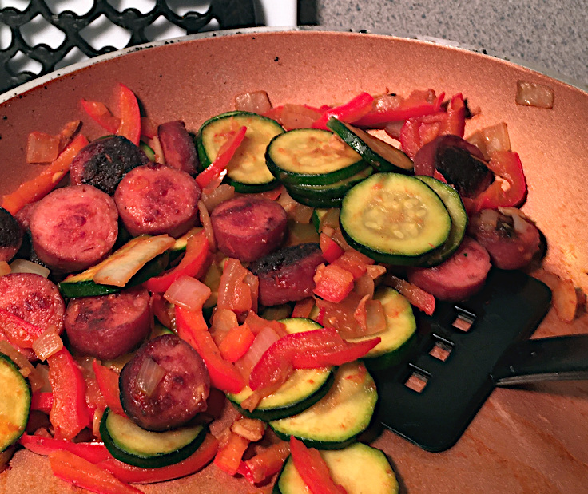

Zucchini Sausage Skillet

This spicy beef sausage and vegetable meal is perfect for a quick breakfast, lunch or dinner.
Ingridients
8 ounces beef sausage
8 ounces zucchini
1 clove garlic
8 ounces red bell pepper
4 ounces onion
1/4 cup salsa
Steps
- Slice sausages and brown in a skillet over medium heat. Remove from skillet and drain on a paper towel. Pour out the oil from the sausages.
- Slice zucchini and brown the slices in the skillet over mediium heat.
- Mince garlic and add to skillet.
- Dice red bell peppers and onions and stir into skillet. Return sausage slices to skillet.
- Add salsa and stir again to completely blend.
- Serve when onions are tender.